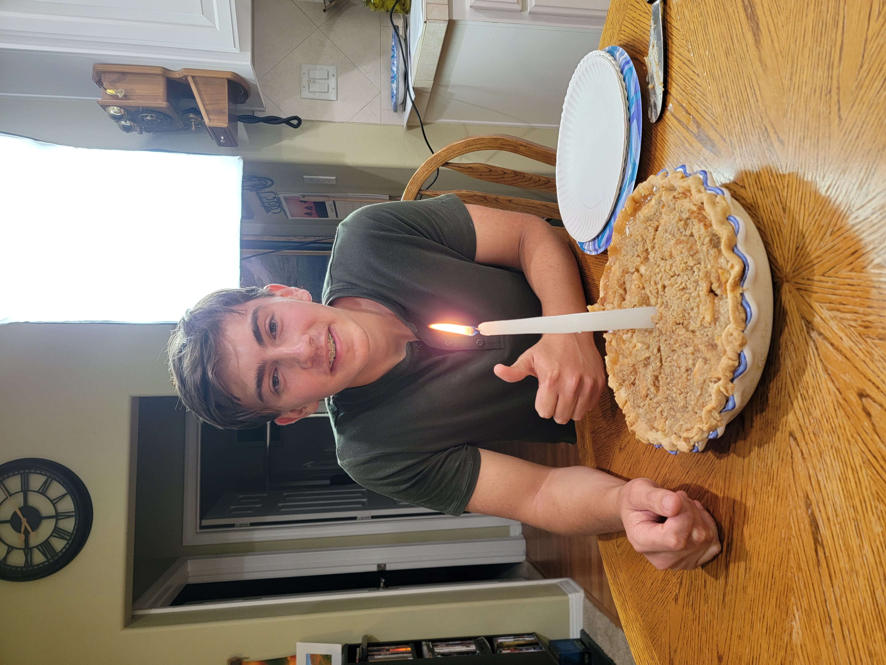

-
My childhood
-
I grew up in Newport Beach California.
-
I went to a small charter school called Early College High School, which focused heavily on dual enrollment classes.
- Raised as a member of the Church of Jesus Christ of Latter-Day Saints
-
My Hobbies
- hiking
- playing board games
- reading
- Here is one of my all-time favorite books!
- writing poems

This is one of my favorite Christmas songs!
Back to Top